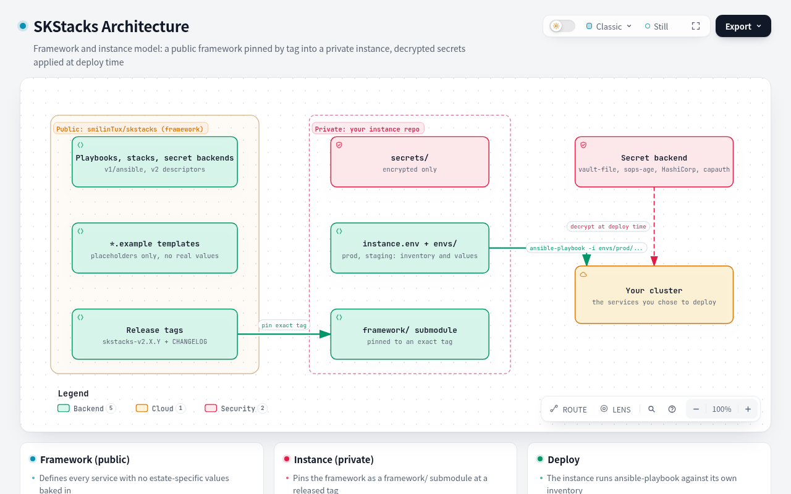

SKStacks is the public framework production SKWorld clusters run on: 46 self-hosted services for Docker Swarm, each one a pinned open-source upstream. Your private instance pins a release tag, keeps the secrets, and deploys only what you pick.
The framework defines every service with *.example templates only. Your inventory, per-environment values and encrypted secrets live in a private instance repo that pins the framework as a submodule.
A test fails any image that is not an explicit tag or a @sha256 digest, so a redeploy months later pulls what was tested. Renovate keeps the pins current in reviewed, grouped pull requests.
Every change renders all templates through real Jinja and runs the skred security gate (gitleaks, trivy, semgrep). A release is an annotated tag with a CHANGELOG entry that names any instance action.
Each card is one Ansible role under v1/ansible/. Core services are one per cluster (the edge, its VIP, threat blocking); everything else is optional and only renders when your instance deploys it. Each card links to the role and lists the upstream it pins.
Ingress, TLS, floating VIPs, threat blocking, CVE detection and patching.
v3.7.19
skfenceha coreHA multi-manager Traefik edgeTraefik v3.7.19
skha coreKeepalived VRRP floating VIPkeepalived (apt, unpinned)
sksec coreCrowdSec agent + Traefik bouncercrowdsec v1.6.11 + bouncer 0.5.0
skaegis optionalContinuous CVE detection: the Detect step of the suite (Defend sksec, Detect skaegis, Remediate skpatch)Wazuh 4.14.10 indexer + manager + dashboard (upstream, digest-pinned)
skbom optionalOWASP Dependency-Track (SBOM store + CVE matching), the image-patching half of the skpatch programDependency-Track 4.14.7 apiserver + frontend, Postgres 17.7 (all digest-pinned)
skpatch-hosts optionalLinux update/patch dashboard (SSH, holds a key per estate); host half of the skpatch programlinux-update-dashboard 2026.11.6 (upstream, digest-pinned)
sksec-web optionalCrowdSec Web UIghcr.io/theduffman85/crowdsec-web-ui:2026.11.12
Single sign-on, mesh VPN and remote access.
0.83.2 (mgmt/signal/relay), dashboard v2.98.0
skrac optionalMeshCentral on the swarm: remote access and device managementghcr.io/ylianst/meshcentral:1.3.1
sksso optionalAuthentik OIDC identity providerAuthentik 2024.4.2
Metrics, logs, alerts, uptime, flow visibility, health checks and cluster UIs.
4.7.10
skhealth optionalLightweight infrastructure health checks with alerts
skmon optionalObservability stack (metrics, logs, alerts, optional profiles)VictoriaMetrics v1.155.0, Grafana Alloy v1.21.3, Loki 3.7.9, Grafana 13.3.0, Alertmanager v0.35.0 (all digest-pinned, pins.yml)
sknet optionalNetwork flow visibility: Akvorado flow collector and console (Kafka + ClickHouse), optional live viewAkvorado 2026.10.1, Kafka 4.3.1, ClickHouse 26.8, Caddy 2.11.9 (tag-pinned)
skport optionalPortainer CE (Swarm web UI)Portainer CE 2.45.4
skpulse optionalUptime Kuma status monitoringUptime Kuma 2.5.5
skwhoami optionaltraefik/whoami echo/test servicetraefik/whoami v1.12.0
Object storage, databases, vectors, graphs, registries, sync and backup.
v4.18.8
skmem-pg optionalPostgres 17 + pgvector + pg_search + AGEPostgres 17 custom image pg17-bm25-age
skreg optionalDocker Registry v2registry:2 (floating)
skstor optionalGarage S3-compatible object storageGarage v2.4.1 (digest-pinned)
sksync optionalSyncthing continuous file syncSyncthing 2.0.13 (hardcoded)
skvector optionalQdrant vector databaseQdrant v1.17.0
Files, wiki, tasks, mail, PDFs, Solid pods and published pages.
2.8.0
skbook optionalBookStack wiki + MariaDBBookStack v26.09-ls285, MariaDB 10.11
skhub optionalNextcloud file sync/collaborationNextcloud 31.0.14, MariaDB 10.11.7
skmail optionalFull SMTP/IMAP mail serverdocker-mailserver 16.0.1
skpages optionalAgent-published HTML pagescaddy:2.11.9-alpine
skpdf optionalStirling-PDF toolkitStirling-PDF 3.5.0
skpods optionalSolid pod hosting (WebID + storage per user); engine nextcloud: a slim standalone Nextcloud with only the Solid appinstance-built engine image (official Nextcloud + Solid app, digest-pinned), Postgres 17.7, Redis 8.10.3
Git and CI, workflow engines, infrastructure as code and service workers.
1.882.0 + Postgres 17.12 (digest-pinned)
skform optionalOpenTofu CLI container (idle, docker exec-driven)OpenTofu 1.10.7
skgit optionalForgejo git + CI runnersForgejo 17.0.2, runner 11.1.2
skorch optionaln8n workflow automationn8n (digest-pinned) + pgvector Postgres
skpayment optionalMulti-app Stripe subscription gateway (FastAPI on uvicorn)smilintux/skpayment-runtime:py3.11-20261123
skwrit optionalMatter engine worker (drafting with gates, release, publishing to Nextcloud)per-site image, digest-pinned; optional nextcloud-mcp 0.218.0
Private metasearch and an AI search front end.
Photos, streaming, media fetching, home and fitness tracking.
v3.4.2 + pgvector/vectorchord Postgres
skgym optionalopenGym gym and body-weight tracker (passkeys, PWA)openGym 1.4.5 api + web (upstream, digest-pinned)
skhome optionalHomeCenter home/property/vehicle/health managerHomeCenter 3.3.0 app (upstream, digest-pinned)
skstream optionalPlex + Real-Debrid (DUMB)plexinc/pms-docker:1.43.5.11079-b3b13e506, kometateam/kometa:v2.5.5
The framework is the playbooks, stacks and secret backends, with no estate-specific values baked in. An instance repo pins it as framework/ at an exact release tag and supplies everything specific to one estate. Upgrading means bumping the submodule to a newer tag, never editing framework code in place.

Every v1 service deploys the same way, from the instance repo:
ansible-playbook -i envs/<env>/inventory.ini \
framework/v1/ansible/<tier>/<service>/deploy_<service>-<env>.yml \
-e target_manager_group=<manager-group> \
--vault-password-file <your vault password file>domain and cluster_name, and a manager group.skstacks_vault_dir: one vault file per service and environment./var/data shared by every Swarm node (NFS or equivalent).Instances pin tags, not branches. Each skstacks-v2.X.Y tag points at the exact commit that was tested, and its CHANGELOG section says what an instance has to do, if anything, before it rolls.
skstacks-v2.26.32 2026-11-23
authentik@file catch-all, created as code and bound to skadmin onlyThe v2 track describes each service once in an app.yaml descriptor and renders it for Docker Swarm, Kubernetes, RKE2 or k3d, with a pluggable secret backend (vault-file, HashiCorp Vault, or CapAuth/PGP) and an External Secrets Operator bridge on Kubernetes. It is under active development; production clusters run v1. 28 descriptors so far, by layer:
Start an instance repo, pin the latest tag, fill in the example values, and deploy one service. Add the next one when you need it.